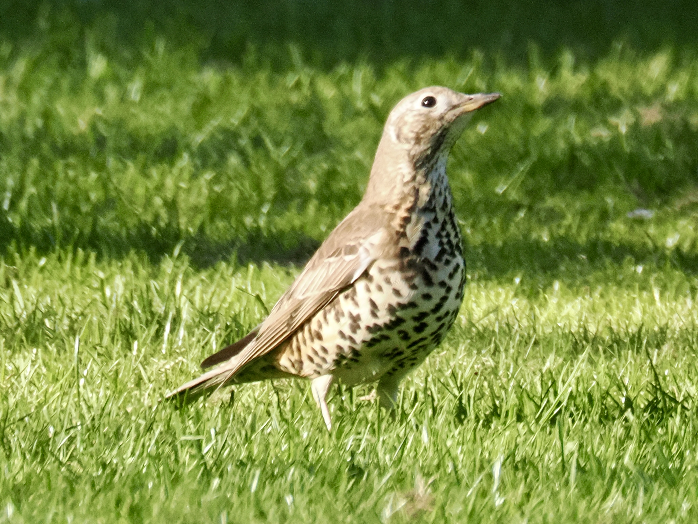
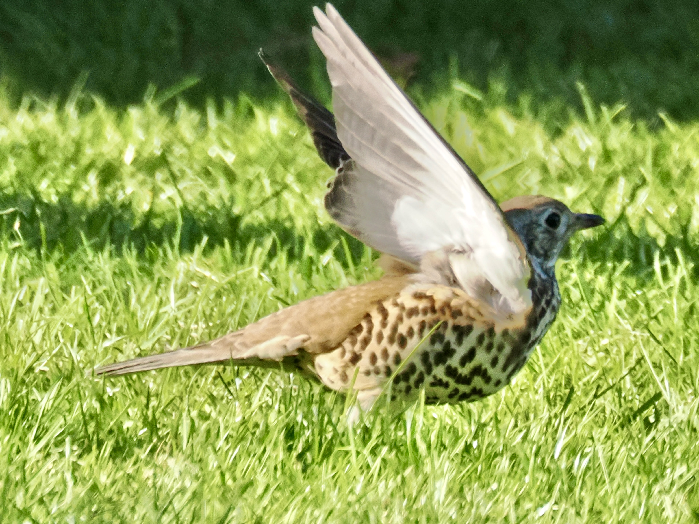

Mistle Thrush
Turdus viscivorus
Order: Passeriformes
Family: Turdidae

The type species of the genus Turdus. Larger than a blackbird, this chunky thrush has a greyish back and a pale belly with dark spots.

The pale underwing is clearly seen in this photo.